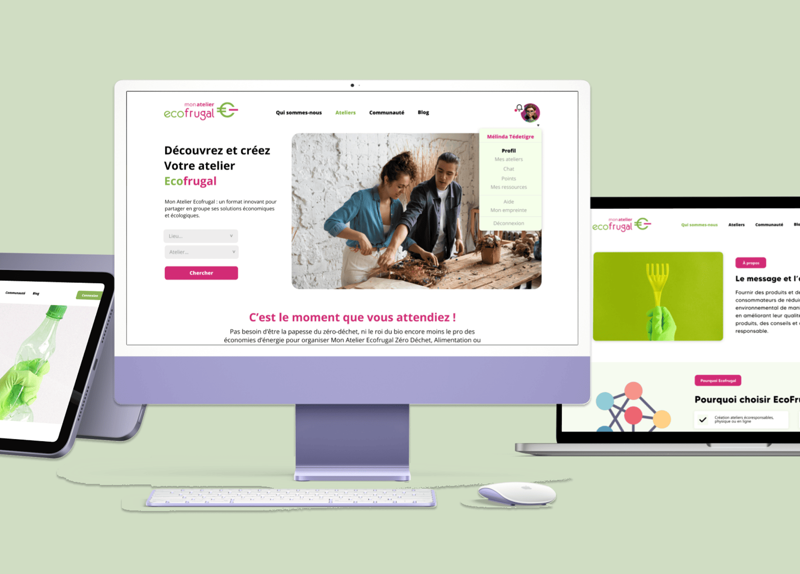
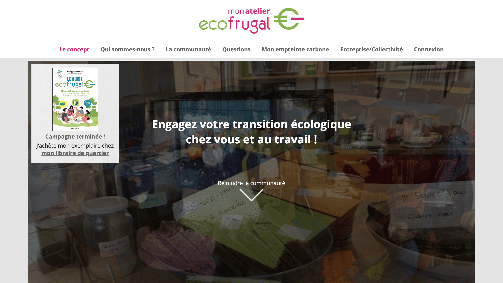
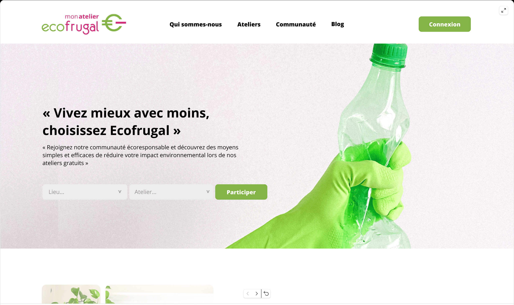
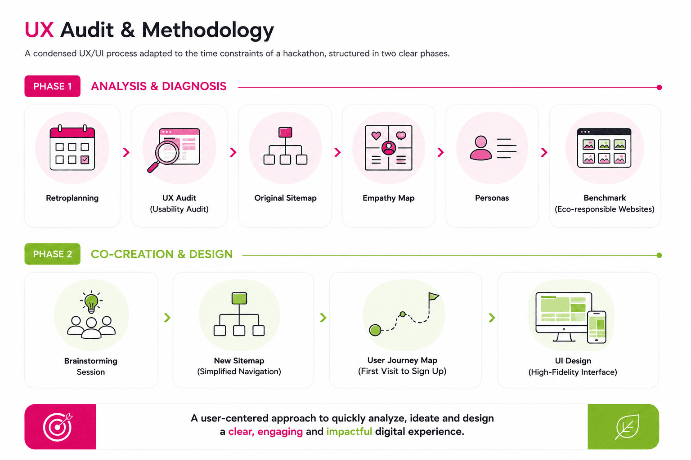
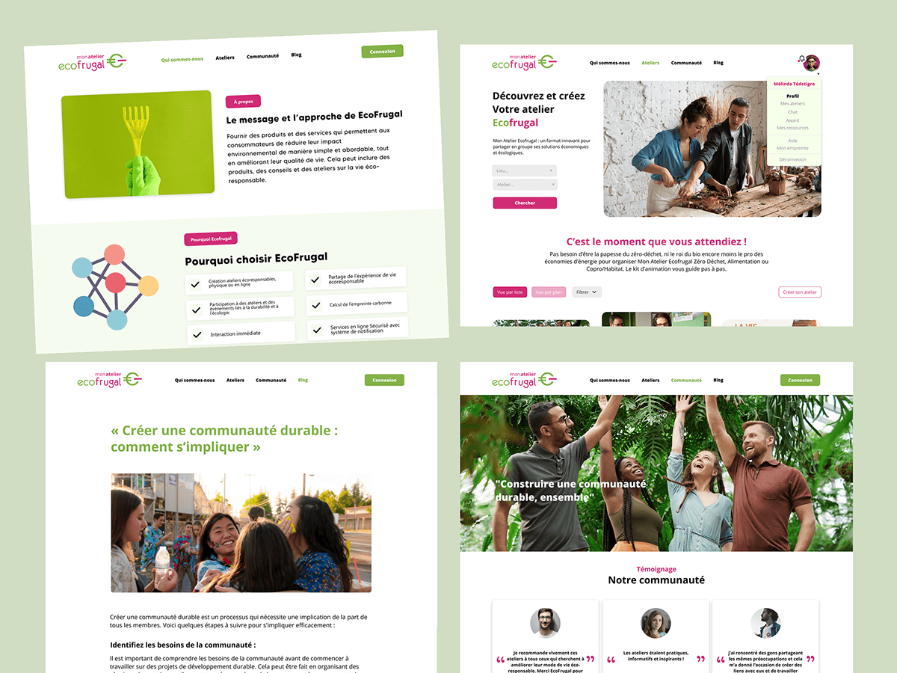
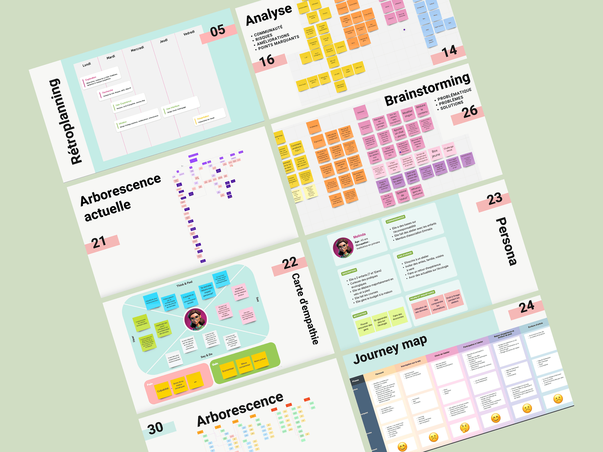

UX/UI designer
Redesign of Mon Atelier Écofrugale
Project Overview
Mon Atelier Écofrugal is a platform that supports HR and CSR teams in helping employees transition toward more ecological practices, both in their professional and personal lives. This project was completed during a client hackathon as part of my Master's program, where I worked as part of a multidisciplinary team to redesign the website and improve the overall user experience through better navigation, clarity, and visual hierarchy.

The Challenge
The existing website lacked clarity and usability, making it difficult for users to understand the platform's purpose and engage with its services. Navigation was unintuitive, content hierarchy was unclear, and the interface did not reflect the eco-responsible values of the brand. The core question we set out to answer was: how might we redesign this platform so that users immediately understand its purpose and feel confident enough to engage with it?

Before
AfterUX Audit & Methodology
We followed a condensed UX/UI process adapted to the time constraints of a hackathon, structured in two clear phases.
Phase 1 — Analysis & Diagnosis
We started by setting up a retroplanning to organize team tasks and priorities across the hackathon weekend. We then conducted a quick usability audit of the existing site to identify key friction points and navigation issues, and mapped out the original sitemap to understand the full content hierarchy. To ground our decisions in real user needs, we built an empathy map and defined key personas — capturing their frustrations, motivations, and expectations. A rapid benchmark of eco-responsible websites gave us visual and UX references to guide our direction.
Phase 2 — Co-creation & Design
Armed with our findings, the team ran a structured brainstorming session to generate concrete ideas for improving clarity, engagement, and access to key information. We reorganized the site structure into a new sitemap based on simplified navigation paths, and designed a user journey map tracing the path from first visit to signing up for an eco-workshop. From there we moved directly into UI design — creating a cleaner, more modern interface aligned with the platform's ecological values, with improved CTA placement and a consistent visual identity.

My Role
Within the team I contributed to the UX audit phase — site analysis, heuristic evaluation, and persona definition — and led the UI redesign of the landing page, including layout restructuring, visual hierarchy, and design system consistency.
Key Deliverables
The project covered the full design process from research to final interface. We started with a retroplanning
to coordinate the team and manage priorities across the hackathon. A usability audit and heuristic analysis helped
us identify the key friction points and navigation issues in the existing website. From there we defined personas and
an empathy map to capture user frustrations and motivations, supported by a quick benchmark of eco-responsible websites
to guide our visual and UX direction. We then reorganised the site structure through a new sitemap and designed a user
journey mapping the full experience from first visit to workshop sign-up. The final deliverable was a redesigned landing
page with a cleaner interface, improved CTA placement, and a consistent design system.


Landing Page Prototype
Click on the frame to expand to full screen.
Press "Esc" to exit full screen
Impact
The redesign brought immediate clarity to a platform that previously struggled to communicate its purpose. The simplified navigation structure and reorganized content hierarchy made it significantly easier for users to understand the platform's offer and find relevant services. The before/after comparison illustrates the shift from a cluttered, inconsistent interface to a clean, structured experience aligned with the brand's eco-responsible identity. The project was delivered within the hackathon timeframe and validated by the client.